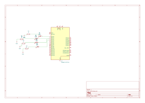
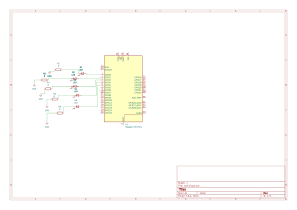

📘 Tarea 2 — Outputs básicos con lógica y máscaras
Tres prácticas con GPIO en Raspberry Pi Pico: contador binario, barrido de LEDs y secuencia en código Gray.
1) Resumen
- Nombre del proyecto: Outputs básicos con lógica y máscaras
- Autor: Carlos Ernesto Camacho González
- Curso / Asignatura: Sistemas Embebidos
- Fecha: 27/08/2025
- Descripción breve: Implementación de patrones de salida con GPIO usando máscaras: contador de 4 bits, barrido tipo “ping-pong” y generación de código Gray.
Consejo
Usa máscaras (MASK) para configurar y escribir varios pines a la vez: el código queda más corto y rápido.
2) Objetivos
- General: Practicar el uso de máscaras de bits para controlar múltiples GPIO y consolidar patrones de salida.
- Específicos:
- Generar un contador binario de 4 bits.
- Implementar un barrido asc/desc de LEDs.
- Producir una secuencia Gray de 3 bits usando operaciones a nivel bit.
3) Alcance y Exclusiones
- Incluye: Configuración de GPIO como salida, escritura en paralelo con
gpio_put_masked/gpio_set_mask/gpio_clr_mask, y temporización consleep_ms. - No incluye: Interrupciones.
4) Requisitos
Hardware - Raspberry Pi Pico / Pico 2. - 3–5 LEDs con resistencias (220–330 Ω) y cableado a los GPIO indicados.
Conocimientos previos - Máscaras de bits, operaciones lógicos.
Contador binario de 4 bits
Nombre del código
Contador binario (4 bits)
Qué debe hacer
Genera un contador binario ascendente de 4 bits.
Los LEDs muestran los valores de 0 a 15, actualizando cada 500 ms.
Código
#include "pico/stdlib.h"
#include "hardware/gpio.h"
#define A 0
#define B 1
#define C 2
#define D 3
int main() {
const uint32_t MASK = (1u<<A) | (1u<<B) | (1u<<C) | (1u<<D);
gpio_init_mask(MASK);
gpio_set_dir_masked(MASK, MASK);
while (true) {
for (uint8_t i = 0; i < 16; i++) {
// Escribe i en los pines A..D
gpio_put_masked(MASK, (uint32_t)i << A);
sleep_ms(500);
}
}
}
Esquemático de conexión

Video
Barrido de LEDs
Nombre del código
Barrido de LEDs (“ping-pong”)
Qué debe hacer
Enciende un LED a la vez en orden ascendente (0→1→2→3→4) y luego descendente (4→3→2→1), repitiendo la secuencia.
Código
#include "pico/stdlib.h"
#include "hardware/gpio.h"
#define A 0
#define B 1
#define C 2
#define D 3
#define E 4
int main() {
const uint32_t MASK = (1u<<A) | (1u<<B) | (1u<<C) | (1u<<D) | (1u<<E);
gpio_init_mask(MASK);
gpio_set_dir_out_masked(MASK);
gpio_clr_mask(MASK);
while (true) {
// Subida: 0..4
for (int i = 0; i < 5; ++i) {
gpio_clr_mask(MASK);
gpio_set_mask(1u << i);
sleep_ms(300);
}
// Bajada: 3..1 (evita repetir extremos 4 y 0)
for (int i = 3; i > 0; --i) {
gpio_clr_mask(MASK);
gpio_set_mask(1u << i);
sleep_ms(300);
}
}
}
Esquemático de conexión

Video
Secuencia en código Gray
Nombre del código
Secuencia en código Gray (3 bits)
Qué debe hacer
Muestra la secuencia Gray de 3 bits: en cada transición solo cambia 1 bit.
Se usa la fórmula gray = n ^ (n >> 1).
Código
#include "pico/stdlib.h"
#include "hardware/gpio.h"
#define A 0
#define B 1
#define C 2
static inline uint8_t bin_to_gray(uint8_t n) {
return (uint8_t)(n ^ (n >> 1));
}
int main() {
const uint32_t MASK = (1u<<A) | (1u<<B) | (1u<<C);
gpio_init_mask(MASK);
gpio_set_dir_masked(MASK, MASK);
while (true) {
for (uint8_t i = 0; i < 8; i++) {
uint8_t gray = bin_to_gray(i);
// Escribe gray en pines A..C
gpio_put_masked(MASK, (uint32_t)gray << A);
sleep_ms(500);
}
}
}
Esquemático de conexión

Video
6) Resultados y conclusiones
- Las máscaras simplifican la configuración y escritura simultánea de varios GPIO.
- El barrido demuestra control individual y temporización consistente.
- La secuencia Gray valida operaciones bit a bit (
^,>>) y su aplicación práctica en minimizar cambios simultáneos.
Próximos pasos: portar a interrupciones/PIO